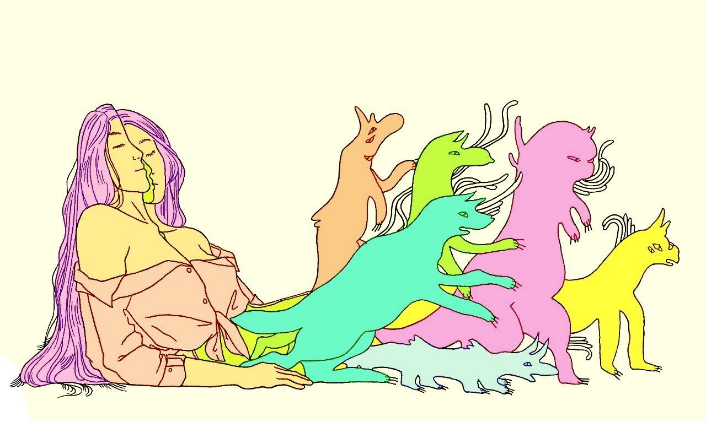
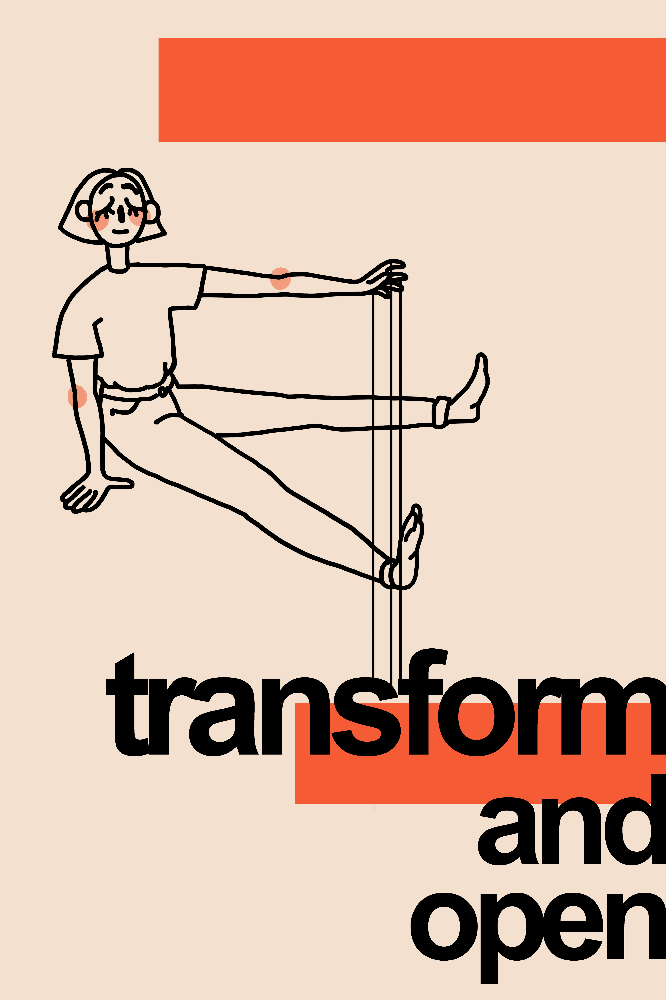
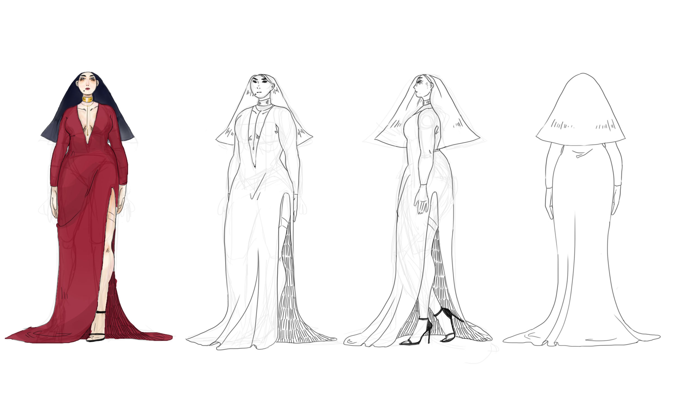

In this piece, I want to transfer the emotion of a blurry melancholy resisting the harsh exposure of the light. The juxtaposition of the light against the haze of fading away presents a feeling of vulnerability.
For this piece, I wanted to draw with a more illustrative/graphic design style, with straight, even lines and a simple color scheme. With this, I wanted to create something that would represent someone's inner struggles and monsters, which are the strange creatures I drew coming out of the woman's stomach. Similarly, she is split down the middle of her face to show the cracks in her seemingly calm façade. I initially created the sketch on paper, then transferred it onto PhotoShop to create the vivid colors.
This is a poster commissioned by a local hibachi restaurant. I chose a simple and bold look to represent this restaurant.
I made this poster on Photoshop for a design contest. I wanted to go for a graphic, modern look to characterize the broad statement of "Transform and Open," which was the prompt given. The girl represents our desire for change: though we may look content, our hearts all grasp for control of our surroundings to make it better. The strings tie her to those feelings and statement. I tinkered with how I could use minimalist designs and color choice to convey my message. I played with multiple designs and compositions and ended up with this as my final piece.
I used Photoshop to create this turnaround for a character sheet. I learned many of the tools in digital art through this, such as layering, shading, and all the tips and tricks: most importantly, pressing shift to create a multiple straight horizontal lines in a turnaround. Although I deleted them in the final product, these horizontal lines are essential to creating a proper turnaround, as it allows for us to create consistency with height. I exaggerated many of her features and heavily relied on shapes as a foundation.